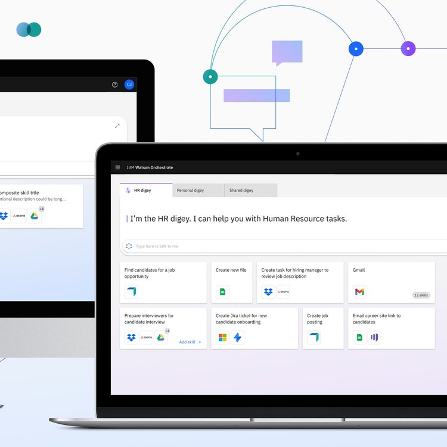
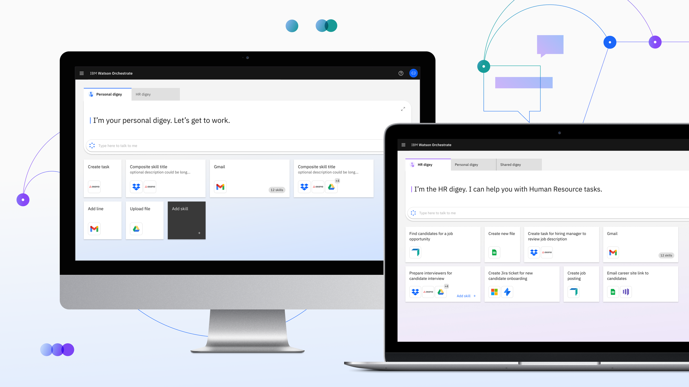
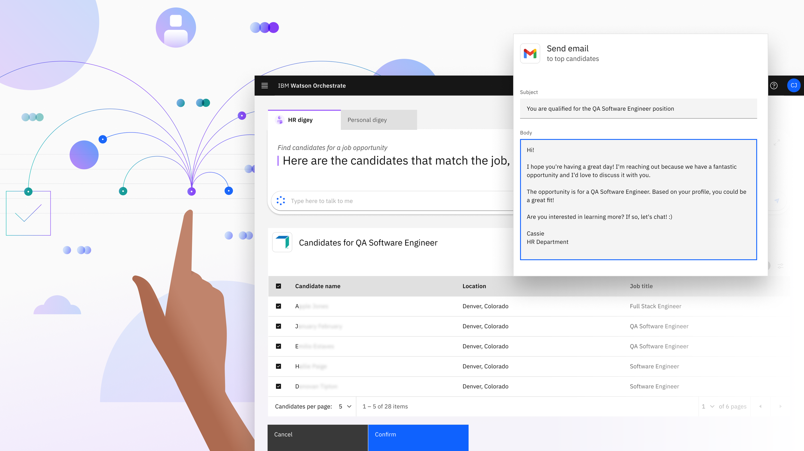
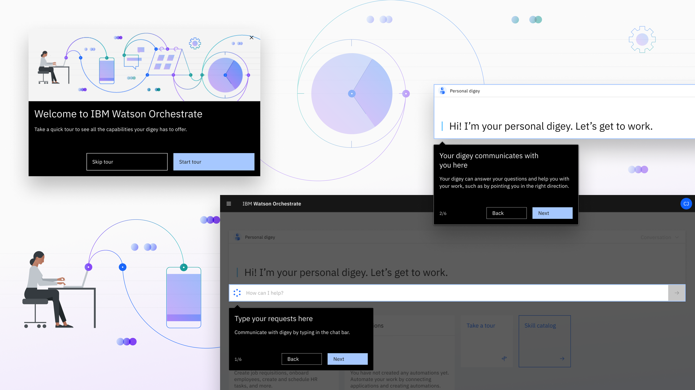
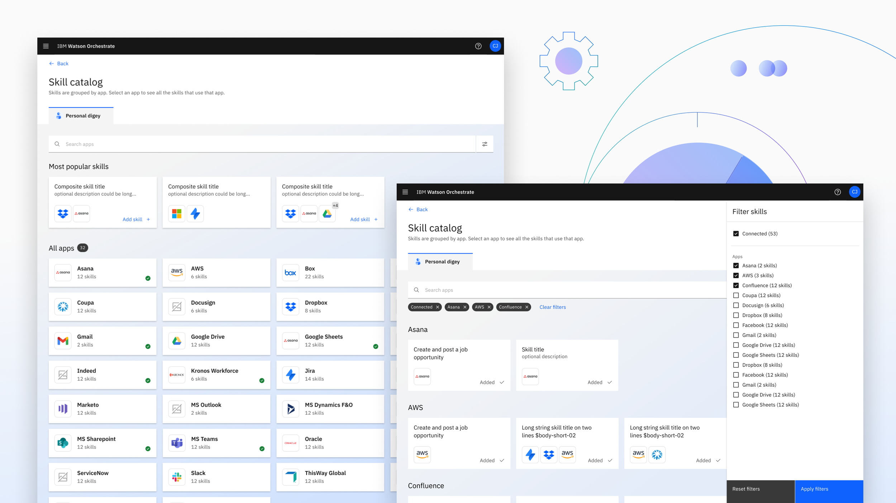

Project type: Product Branding, UX/UI Design
Role: UI Designer
Key objectives: Develop a strong, ownable visual identity for the product, create an intuitive product experience, and ensure the tone and design reflected both the AI capabilities and user-friendly nature of Watson Orchestrate.

Problem: IBM needed to launch a new AI-powered product with a brand that stood out from its wider suite, while remaining consistent with their global identity. The user experience had to be simple and human-centric to encourage engagement from non-technical users.
Outcome: We delivered a unique and friendly brand identity with bright, energetic colours and playful illustrations. The product landing page was clear and informative, helping users quickly understand what Watson Orchestrate could do and why it mattered.
The main challenge was balancing IBM’s trusted, enterprise-level image with a fresh, approachable design for a cutting-edge product. We had to define visual and verbal styles that stood out from other IBM products, while still feeling like part of the family.
We developed a colour palette, typography, and illustration style that felt bold and modern while still trustworthy. The characterful robot illustrations and custom icons brought warmth and personality to the product.


We designed a product landing page that guided users through what Watson Orchestrate is, how it works, and how to get started. The page used scroll animations and playful layouts to maintain interest and build clarity.


Designing for AI means designing for trust. This project taught me how important it is to humanise emerging tech, especially for non-technical users. We needed Watson Orchestrate to feel smart, but not intimidating. I'm proud of how the final experience balanced playfulness and professionalism.